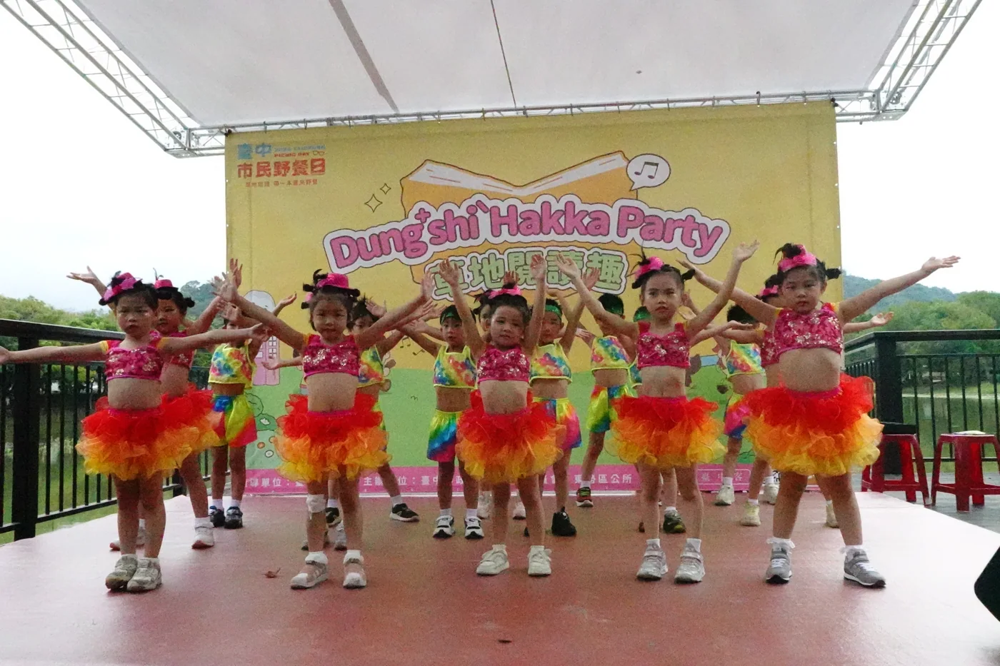

TAICHUNG FOOTBALL 2026一座城市，一起為足球喝采。
115年臺中市分齡足球友誼賽暨國際足球邀請賽
THE COUNTDOWN
距離活動開始
2026.12.05 SAT · 13:00 臺灣時間
--天 DAYS
:--時 HRS
:--分 MIN
:--秒 SEC
LATEST NEWS · OFFICIAL ANNOUNCEMENTS
全部公告 ↗大會最新消息與公告
競賽章程與賽程資訊集中於此；完整的球隊故事與照片請至「參賽球隊介紹」查看。

表演介紹春季約看桐花臺中市立東勢幼兒園以活潑的客家歌謠與體能律動，展現孩子們的朝氣與在地文化。查看表演介紹與照片 ↗